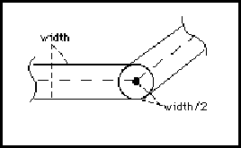
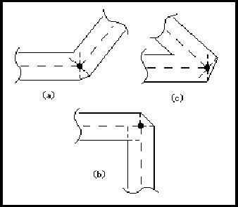

connectivityBusJoined ::= '(' 'connectivityBusJoined'
portJoined
{ connectivityRipperRef }
')'
!connectivityBus !connectivityBusSlice !connectivitySubBus
ConnectivityBusJoined lists all the ports and rippers that are connected to the bus, bus slice or subbus. It is analogous to connectivityNetJoined in net.
(connectivityBusJoined (portJoined (portRef MP1) ...) (connectivityRipperRef R1))
In this example, the master port MP1 and a connectivityRipper R1 are joined to the bus.
connectivityBusSlice ::= '(' 'connectivityBusSlice'
interconnectNameDef
signalGroupRef
interconnectHeader
connectivityBusJoined
{ comment | connectivityBusSlice | connectivitySubBus | userData }
')'
*connectivityBus *connectivityBusSlice *connectivitySubBus
A connectivityBusSlice is used to define part of a connectivityBus that has a width less than the width of the immediately-enclosing connectivityBus, connectivityBusSlice or connectivitySubBus. A connectivityBusSlice may be further subdivided into connectivityBusSlices and connectivitySubBusses.
(signalGroup A0_1
(signalList (signalRef A0) (signalRef A1)))
(signalGroup A2_3
(signalList (signalRef A2) (signalRef A3)))
(signalGroup A
(signalList (signalRef A0_1) (signalRef A2_3)))
...
(connectivityBus A
(signalGroupRef A)
(interconnectHeader ...)
(connectivityBusJoined ...)
(connectivityBusSlice S0_1
(signalGroupRef A0_1)
(interconnectHeader ...)
(connectivityBusJoined ...) ...)
(connectivityBusSlice S2_3
(signalGroupRef A2_3)
(interconnectHeader ...)
(connectivityBusJoined ...) ...)
...)
In this example, the connectivityBus A is subdivided into two connectivityBusSlices S0_1 and S2_3 . Each of these has two signals from the four-bit-wide connectivityBus. In this case, there is no overlap between these signals, but there could be one or more signals common to the bus slices.
connectivityNet ::= '(' 'connectivityNet'
interconnectNameDef
signalRef
interconnectHeader
connectivityNetJoined
{ comment | connectivitySubNet | userData }
')'
A connectivityNet is a structured representation of connectivity. Structural connectivity allows the ordering of ports to be described and makes an association between signals, ports and rippers. Each connectivityNet is associated with a single signal and with single bit ports.
The connectivitySubNets within a connectivityNet provide further information on the structure of the connectivity.
(connectivityNet NET1 (signalRef SIG1)
(interconnectHeader ...)
(connectivityNetJoined
(portJoined
(portRef MP1)
(portInstanceRef P1 (instanceRef I1)))
(connectivityRipperRef ...)
...)
...)
This example defines a connectivityNet called NET1, which gives the structural connectivity for all or part of the signal SIG1.
connectivityNetJoined ::= '(' 'connectivityNetJoined'
( portJoined | joinedAsSignal )
{ connectivityRipperRef }
')'
!connectivityNet !connectivitySubNet
ConnectivityNetJoined lists all the ports and rippers that are connected to the net or subnet. It is analogous to connectivityBusJoined in bus.
(connectivityNetJoined
(portJoined
(portRef MP1)
(portInstanceRef P1 (instanceRef I1)))
(connectivityRipperRef J1)
...)
This connectivityNetJoined indicates that the master port MP1, the ripper J1 and the instance port P1 are connected into this net.
connectivityRipper ::= '(' 'connectivityRipper'
connectivityRipperNameDef
')'
connectivityRipperNameRef connectivityRipperRef
A connectivityRipper is an object used in a connectivity view to associate a connectivity bus, bus slice or subbus with other connectivity busses, subbusses, bus slices, nets or subnets.
The connectivityRipper construct gives a name for the ripper. Association between the connectivityRipper and its nets or busses is defined in the connectivityBusJoined and connectivityNetJoined constructs, which may reference a particular connectivityRipper.
(connectivityRipper I1) (connectivityRipper I2)
This example shows two different rippers, with names I1 and I2.
connectivityRipperNameDef ::= nameDef
ConnectivityRipperNameDef is the name of a connectivity ripper.
connectivityRipperNameRef ::= nameRef
connectivityRipper connectivityRipperNameDef
ConnectivityRipperNameRef is a reference to a connectivityRipperNameDef.
connectivityRipperRef ::= '(' 'connectivityRipperRef'
connectivityRipperNameRef
')'
*connectivityBusJoined *connectivityNetJoined
ConnectivityRipperRef is used to reference a connectivityRipper.
(connectivityRipperRef I1)
This example shows a reference to a connectivityRipper whose name is I1.
connectivityStructure ::= '(' 'connectivityStructure'
{ comment | connectivityBus | connectivityNet | connectivityRipper |
localPortGroup | timing | userData }
')'
ConnectivityStructure is used to describe the structural connectivity for a connectivityView.
Logical connectivity describes which ports are connected together, in terms of signals, and structural connectivity describes the structure of that connectivity.
ConnectivityView has no implementation section because there is no graphical implementation of a connectivity view.
(connectivityStructure (connectivityRipper I1) (connectivityNet NET1 ...) (connectivityNet NET2 ...) (connectivityNet NET3 ...) (connectivityBus BUS1 ...) ...)
connectivitySubBus ::= '(' 'connectivitySubBus'
interconnectNameDef
interconnectHeader
connectivityBusJoined
{ comment | connectivityBusSlice | connectivitySubBus | userData }
')'
*connectivityBus *connectivityBusSlice *connectivitySubBus
A connectivitySubBus provides further structural information about the connectivity of the connectivityBus, connectivityBusSlice or connectivitySubBus that contains it. It is analogous to connectivitySubNet in connectivityNet.
The width of a subbus is the same as the enclosing bus slice or bus.
(connectivityBus A (signalGroupRef A)
(interconnectHeader ...)
(connectivityBusJoined
(portJoined (portRef MP1) (portRef MP2)) ...)
...
(connectivitySubBus S1
(interconnectHeader ...)
(connectivityBusJoined
(portJoined (portRef MP1)) ...) ...)
(connectivitySubBus S2
(interconnectHeader ...)
(connectivityBusJoined
(portJoined (portRef MP2)) ...) ...))
In this example, the bus A has two subbusses. The first, S1, joins the master port MP1 and the second, S2, joins the master port MP2.
connectivitySubNet ::= '(' 'connectivitySubNet'
interconnectNameDef
interconnectHeader
connectivityNetJoined
{ comment | connectivitySubNet | userData }
')'
*connectivityNet *connectivitySubNet
A connectivitySubNet provides further structural information about the connectivity of the connectivityNet or connectivitySubNet that contains it.
(connectivityNet NET1 (signalRef SIG1)
(interconnectHeader ...)
(connectivityNetJoined
(portJoined (portRef MP1)
(portInstanceRef P1 (instanceRef I1)))
...)
(connectivitySubNet SUBNET1
(interconnectHeader ...)
(connectivityNetJoined
(portJoined (portRef MP1))) ...)
(connectivitySubNet SUBNET2
(interconnectHeader ...)
(connectivityNetJoined
(portJoined
(portInstanceRef P1
(instanceRef I1))) ...)
...)
...)
In this example, the connectivity of the connectivityNet is described by two subnets, SUBNET1 and SUBNET2
connectivityUnits ::= '(' 'connectivityUnits'
{ <setCapacitance> | <setTime> }
')'
!connectivityViewHeader <physicalScaling
ConnectivityUnits defines the units for connectivityView. It may be specified as a default for the entire data in edifHeader, for a library in libraryHeader, or for a particular view in connectivityViewHeader.
(edif edif_file
(edifVersion 4 0 0)
(edifHeader (edifLevel 0)
(keywordMap (k0KeywordLevel))
(unitDefinitions
(unit mm 1 (e 1 -3) (meter 1))
(unit pF 1 (e 1 -12) (farad 1))
(unit nF 1 (e 1 -9) (farad 1))
(unit nanoSec 1 (e 1 -9) (second 1)))
(fontDefinitions ...)
(physicalDefaults ...)
(physicalScaling
(connectivityUnits
(setCapacitance (unitRef pF))
(setTime (unitRef nanoSec)))
...))
(library LIB1
(libraryHeader (edifLevel 0)
(nameCaseSensitivity)
(technology
(physicalScaling
(connectivityUnits
(setCapacitance (unitRef nF))))
...) ...)
(cell CELL1 (cellHeader ...)
(cluster CL1 (interface ...) ...
(connectivityView VIEW1
(connectivityViewHeader
(connectivityUnits
(setCapacitance (unitRef pF))))
...)))))
In this example, unit definitions for mm, pF, nF and nanoSec are defined in the edifHeader. ConnectivityUnits are defined as pF for capacitance and nanoSec for time, and this will apply, unless overridden, to all connectivity views within this edif file.
Within LIB1, connectivityUnits are defined as nF for capacitance, and this will override the definition of setCapacitance in the edifHeader, so within LIB1 all capacitance values within connectivity views will be in nF. This may be overridden at the view level, as in view VIEW1, which resets capacitance values to be in pF.
connectivityView ::= '(' 'connectivityView'
viewNameDef
connectivityViewHeader
logicalConnectivity
connectivityStructure
{ comment | userData }
')'
ConnectivityView describes the electrical connectivity of a cell. In addition, structure may be defined in order to allow attributes, such as interconnect criticality, to be represented.
(connectivityView VIEW_1
(connectivityViewHeader ...)
(logicalConnectivity
(instance ...)
(signal ...) ...)
(connectivityStructure ...))
connectivityViewHeader ::= '(' 'connectivityViewHeader'
connectivityUnits
{ <derivedFrom> | documentation | <nameInformation> |
<previousVersion> | property | <status> }
')'
ConnectivityViewHeader contains data that relates to the connectivity view as a whole.
(connectivityViewHeader (connectivityUnits (setTime (unitRef ms))) (status ...) (documentation ...) ...)
contract ::= '(' 'contract'
stringToken
')'
Contract identifies the contract associated with the drawing. Contract means all types of agreements and orders for the procurement of supplies or services.
(contract "91/1010")
contractDisplay ::= '(' 'contractDisplay'
( addDisplay | replaceDisplay | removeDisplay )
')'
<pageTitleBlockAttributeDisplay
ContractDisplay is used to define display positions for contract. When used in the context of pageTitleBlock, it may add, replace or remove displays. Within the context of a template definition, only addDisplay may be used.
copyright ::= '(' 'copyright'
year
{ stringToken }
')'
copyrightDisplay copyrightDrawing
Copyright is used to indicate to the reader any copyright restrictions on the use of the EDIF data or of a particular object within the file, depending on the context of the use of status.
The stringTokens are the copyright owners.
(copyright
(year 1992)
"Electronic Industries Association")
copyrightDisplay ::= '(' 'copyrightDisplay'
( addDisplay | replaceDisplay | removeDisplay )
')'
<pageTitleBlockAttributeDisplay
CopyrightDisplay is used to define display positions for copyright. When used in the context of pageTitleBlock, it may add, replace or remove displays. Within the context of a template definition, only addDisplay may be used.
copyrightDrawing ::= '(' 'copyrightDrawing'
{ pcbDrawingTextDisplay }
')'
<pcbDrawingTitleBlockAttributeDisplay
Specifies how to display the copyright text string.
See pcbDrawingTitleBlockAttributeDisplay for an example of display slots.
cornerType ::= '(' 'cornerType'
( truncate | round | extend )
')'
<figureGroup <figureGroupOverride <pcbDimensionDrawingAttributeOverride <pcbDimensionEndGeometry <pcbDrawingAttributeDefault <pcbDrawingFigureDrawingAttributeOverride <pcbDrawingSymbolPlacementDrawingAttributeOverride <pcbFigureAttributeOverride <pcbGeometricAttributeDefault <pcbLeaderLineDrawingAttributeOverride resizeCornerType
CornerType specifies the type of corners of, for example, paths. It encloses one of three possible values which are extend, truncate and round. The default is truncate. The corners are formed by two consecutive segments of the same path.
If, for example, cornerType is used in figureGroup in the technology section of a library, the specified corner type is the default corner type to be used for all path and openShape corners in the figure group. CornerType may also be specified in figureGroupOverride within the figure itself to override the default corner type.
In all cases, the inside of a corner is formed by a single point when the expansion of the two edges meet. For cornerType round, an arc with a radius of half the value of the associated pathWidth forms the outer corner. Such specifications are not universally acceptable for mask layout descriptions.
EndType and cornerType apply to cases in which one or two arcs are used, by using the tangents to those arcs (at the point of intersection) in the role of the simple center-lines referred to in the above definitions.

Corner -Type round
If the corner forms an obtuse angle, both the remaining cornerTypes specify an outer corner with a single point.
Corner-Type extend for obtuse angles
For acute angles, truncate produces an additional edge which joins the two points that would have been produced by endType extend applied to each edge separately. For example, this generates the "stop sign" or an octagonal corner for a right angle.

Corner-Type truncate
The final case is the outer expansion of an acute angled corner with cornerType extend. This specifies the addition of two extra symmetrical line segments at the corner. They should be perpendicular to the original center line edges and be within the two edges that would have been produced by endType extend applied to each edge separately. These are indicated as tangent 1 and tangent 2 in the following figure.

Corner-Type extend for acute angles.
(figureGroup Metal
(cornerType (extend))
(comment "specifies a default corner type of extend")
(pathWidth 10))
...
(figure
(figureGroupOverride Metal
(cornerType (truncate))
(comment "override default corner type"))
...)
This example shows the definition of Metal with a defined cornerType of extend, and the local change to truncate within a figure statement.
coulomb ::= '(' 'coulomb'
unitExponent
')'
Coulomb is used to specify a user-defined unit in terms of the SI unit of electric charge, coulomb. See unit for examples of the definition of units.
criticality ::= '(' 'criticality'
integerValue
')'
<interconnectAnnotate <interconnectHeader <schematicInterconnectHeader <schematicSubInterconnectHeader
The criticality attribute is used to describe the relative importance of an interconnect in comparison with other interconnects, for routing purposes. The integer may be positive or negative. An interconnect with a low value for its criticality is given a lower priority for routing purposes than an interconnect with a higher value for its criticality. If the criticality of an interconnect is not specified, the default is zero.
(connectivityNet CLOCK (signalRef SIG1) (interconnectHeader (criticality 100)) (connectivityNetJoined ...) ...) (connectivityNet LSSD (signalRef SIG2) (interconnectHeader (criticality -50)) (connectivityNetJoined ...) ...)
In this example, connectivity net LSSD is declared to be less critical than connectivity net CLOCK, and also less critical than any interconnects that do not have a specified criticality value.
criticalityDisplay ::= '(' 'criticalityDisplay'
{ display }
')'
<interconnectAttachedText <schematicInterconnectAttributeDisplay
CriticalityDisplay is used to define display positions for criticality.
currentMap ::= '(' 'currentMap'
currentValue
')'
CurrentMap is an attribute of a logic value which is used to specify its electrical characteristics. CurrentMap gives a value or range of values to specify what the accepted current values are for the given logic value. The value is expressed in units defined by setCurrent.
A logic value associated with a positive current indicates conventional current flow into a cell when observed on a port. When the same logic value is assigned to a port, this indicates conventional current flowing out of the cell. Reverse flows are specified by a negative value used within currentMap.
(setCurrent (unitRef mA))
...
(logicDefinitions ...
(logicValue T
(currentMap (e 2 -1))))
In the above example, the accepted current for the logic value T is defined to be 0.2 mA. Since this is positive, it implies current flow from an input port or to an output port.
currentValue ::= miNoMaxValue
A value for current measured in units defined by setCurrent.
curve ::= '(' 'curve'
{ arc | arcByCenter | pointValue }
')'
!openShape !shape !unfilledShape
Curve contains an ordered list of points intermingled with arcs. A point preceding an arc forms a line segment with the first point specified within the arc. A point following an arc forms a line segment with the last point specified by the arc within figures. Two or more points in sequence represent one or more line segments.
A final line segment from the last point to the first point is automatically obtained in the context of the shape.
(shape
(curve
(pt 20 100)
(arc
(pt 40 100)
(numberPoint 50 110)
(pt 40 120))
(pt 20 120)))
This example consists of one arc from (40, 100) through (50, 110) to (40, 120) and three straight line segments - from (40, 120) to (20, 120), from (20, 120) back to (20, 100), and from (20, 100) to (40, 100). This is illustrated in the figure below.

dataOrigin ::= '(' 'dataOrigin'
stringToken
{ <version> }
')'
DataOrigin identifies the actual location where a particular part of the EDIF data was created, and its local version identification. This may be as specific or as general as required, identifying a particular office or an entire country. DataOrigin is intended for human interpretation and should serve as an aid for problem analysis. The version is nested within dataOrigin, as the conventions for data versions are taken to be specific to each location.
(dataOrigin "EDIF Inc., Santa Clara Division" (version "12-A5"))
This identifies the Santa Clara Division of EDIF Inc., a fictitious company, as the source of the data. The local version identification is "12-A5".
date ::= '(' 'date'
yearNumber
monthNumber
dayNumber
')'
!approvedDate !checkDate !engineeringDate !originalDrawingDate !timeStamp
approvedDateDisplay checkDateDisplay drawingDate drawingDateDrawing drawingFirstUsedDate drawingFirstUsedDateDrawing engineeringDateDisplay originalDrawingDateDisplay
Date specifies the date as three integers representing the year, month and day.
(date 1992 4 29)
This example represents the date April 29th 1992.
dayNumber ::= integerToken
!date
DayNumber represents a number of days within timeStamp.
dcFanInLoad ::= '(' 'dcFanInLoad'
nonNegativeNumber
')'
<bidirectionalPortAttributes <outputPortAttributes
dcFanInLoadDisplay dcFanOutLoad dcMaxFanIn
DcFanInLoad is used to specify an EDIF attribute of ports. The value specified is used to compute the fan-in load contributed by an output port or bidirectional port. No units are specified for this quantity. See dcMaxFanIn for a further description.
(dcFanInLoad 25)
The above example specifies a port to have a dcFanInLoad value of 25.
dcFanInLoadDisplay ::= '(' 'dcFanInLoadDisplay'
( addDisplay | replaceDisplay | removeDisplay )
')'
dcFanInLoad dcFanOutLoadDisplay dcMaxFanInDisplay display
DcFanInLoadDisplay is used to define display positions for dcFanInLoad. When used in the context of any implementation, it may add, replace or remove displays. Within the context of a template definition, only addDisplay may be used.